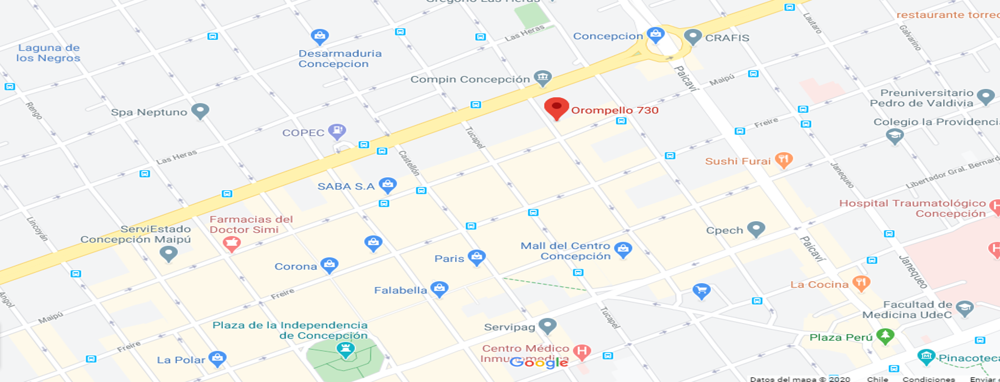

La inauguración de nuestro negocio es un momento realmente importante en toda nuestra aventura empresarial; es que un buen comienzo ademas es imprescindible a la hora de encajar en el mercado, mas que nada en el centro de Concepcion. Por este motivo, toda pyme debe tomarse su tiempo a la hora de gestionar este evento y compartirlo con ustedes nuestros clientes. Para nosotros es importante presentarles nuestra nueva sucursal.
Lo primero que debemos hacer es fijar un día y una hora para la inauguración, en este verano para que asistan, ya que para nosotros es importante tu asistencia como nuestro cliente VIP es importante que esta fecha no
coincida con ningún evento importante, en la Municipalidad de Concepcion. Para ello, debemos pensar en nuestro público objetivo y observar el
calendario para ver que no hay ningún evento en nuestra ciudad, como fiestas locales o incluso eventos deportivos. Asimismo, la hora también será muy importante,
pues hay que buscar una franja horaria en la que la gente no esté trabajando y puedan coincidir, ser voceros de nuestra inauguración.
Tomaremos en cuenta todas sus sugerencias, con la mejor atencion y servicio de nuestro personal capacitado, cocineros, pasteleros, panaderos, reposteros y atencion al publico capacitado para la mejor atencion.
Nuestra nueva sucursal queda en Orompello 730 en Concepcion.
